السلسلة 47
السيارة (صنف B) · 40 سؤال بالصوت. حاول تجاوب بوحدك، من بعد شوف الجواب.
السؤال 1
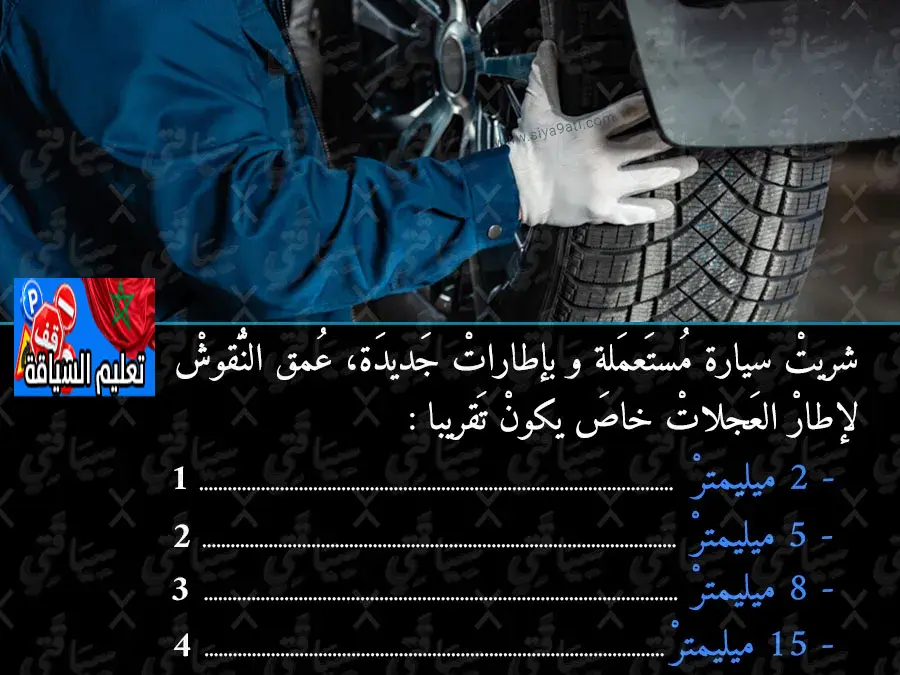
بيّن الجواب
الجواب الصحيح: 3
دابا غادي نشرحو واحد السؤال مهم بزاف، كيجي فالاختبار النظري، وخصنا نكونو مركزين فيه مزيان. السؤال كايقول: (شريت سيارة مستعملة، وبإطارات جديدة. فهاد الحالة، شحال خاص يكون تقريبا عمق النقوش ديال العجلة؟) أول حاجة خاصنا ننتابهو ليها، هو أن السؤال ماشي كايطلب منا نعرفو الحد الأدنى القانوني باش خاصنا نبدلو العجلات، السؤال كايهضر على عجلات جْداد، يعني مازال ما دازوش على الطريق، وباقي فيهم العمق ديالهم الأصلي. وهنا، كندخلو لمعلومة مهمة: الإطارات الجديدة، كيكون فيها عمق النقوش تقريبا 8 ميليمتر، وهادشي اللي كيعطيها التشبث مزيان فالطريق، وكيخلي الفرملة تكون فعّالة، خصوصاً فالأرض المبللة ولا الزلقة. 👎 5 ميليمتر ولا 2 ميليمتر، معناها العجلة مستعملة بزاف. و 15 ميليمتر؟ بزاف عليها، حتى الإطارات الجديدة ما كتوصّلش لهاد الرقم. ✅ إذن، الجواب الصحيح هو: 8 ميليمتر 📌 نعاود ونذكّرك: السؤال ماشي على الحد الأدنى القانوني، ولكن على حالة جديدة ديال العجلة، يعني خاص يكون العمق ديال النقوش هو 8. الجواب الصحيح هو رقم 3.
السؤال 2
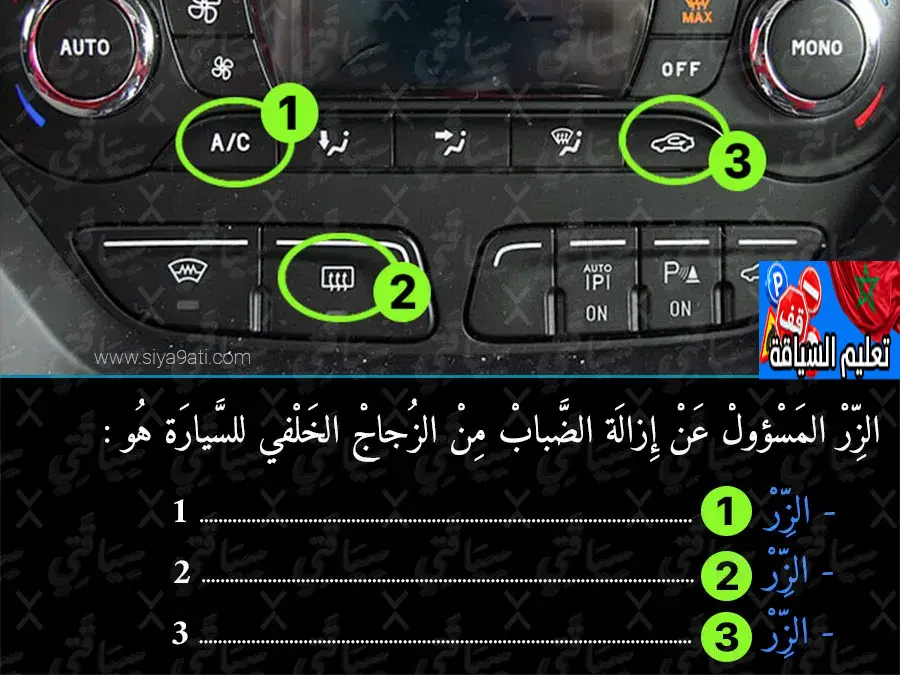
بيّن الجواب
الجواب الصحيح: 2
الزر المسؤول عن ازالة الضباب من الزجاج الخلفي للسيارة هو الزر رقم 2. الجواب الصحيح هو رقم 2.
السؤال 3
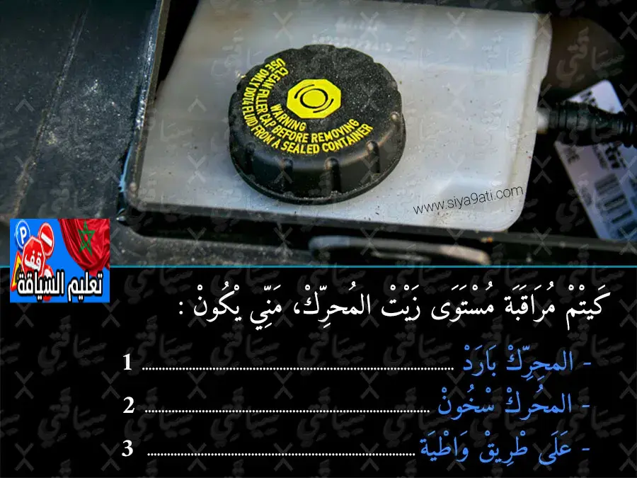
بيّن الجواب
الجواب الصحيح: 1 و 3
باش نقيسو مستوى زيت الموتور مزيان، خاص الموتور يكون بارد، حيث الزيت كيكون رجع كامل للكارتير، وما باقيش كيدور فالموتور. وزيد على هادشي، خاص الطوموبيل تكون واقفة فوق طريق مستوية باش القياس يخرج مضبوط، ما يكون لا مائل لقدّام ولا لور. الجواب الصحيح هو رقم 1 و 3.
السؤال 4
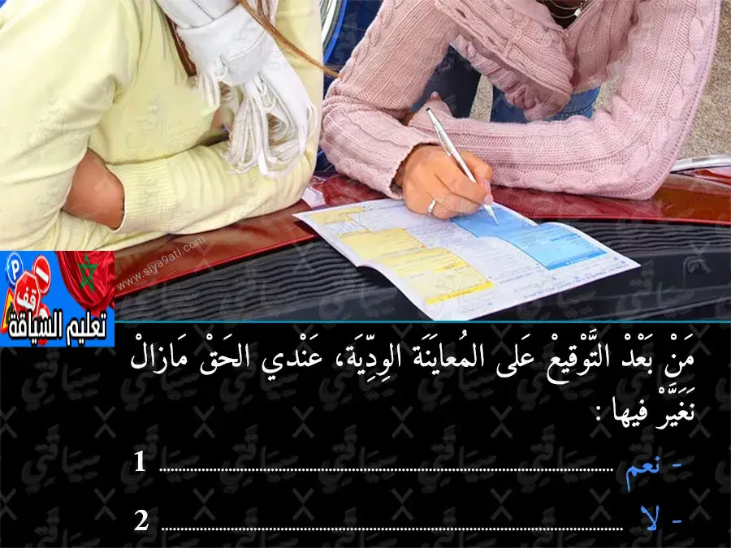
بيّن الجواب
الجواب الصحيح: 2
منين كتوقّع على المعاينة الودية (constat amiable)، كتولي وثيقة رسمية بينك وبين الطرف الآخر، وكتدخل عند شركة التأمين. من بعد التوقيع، ما كيبقاش عندك الحق تبدّل فيها شي حاجة، إلا إذا وافق الطرف الآخر، وكتعاودو توقّعو من جديد. 📌 لهذا، خاصك تقرا المعاينة مزيان قبل ما توقّع، وتتأكد أن كلشي المعلومات صحيحة. الجواب الصحيح هو رقم 2.
السؤال 5
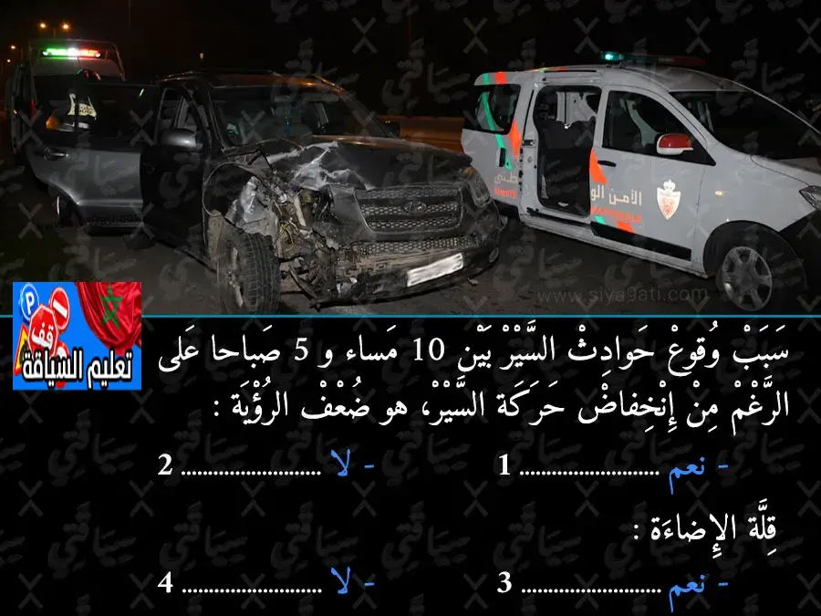
بيّن الجواب
الجواب الصحيح: 1 و 3
بين الساعة 10 ديال الليل و5 ديال الصباح، كيوقعو بزاف ديال الحوادث، حتى وإن كانت حركة السير قليلة. السبب الرئيسي هو أن الرؤية كتنقص بزاف فالليل، وحتى مع وجود الأضواء، ما كتكونش بحال النهار. وكاينين عوامل أخرى كيزيدو من الخطورة، بحال: قلة الإضاءة فبعض المقاطع الطُرقية التعب أو النعاس عند السائق نقص التركيز وغياب الحذر ومرات حتى السرعة كتكون مفرطة بلا ما يحس السائق لهذا، خاص أي سائق يكون منتبه ومتيقظ مزيان فالليل، ويزيد مسافة الأمان، ويفضل يرتاح إذا حس بالتعب. الجواب الصحيح هو رقم 1 و 3.
السؤال 6
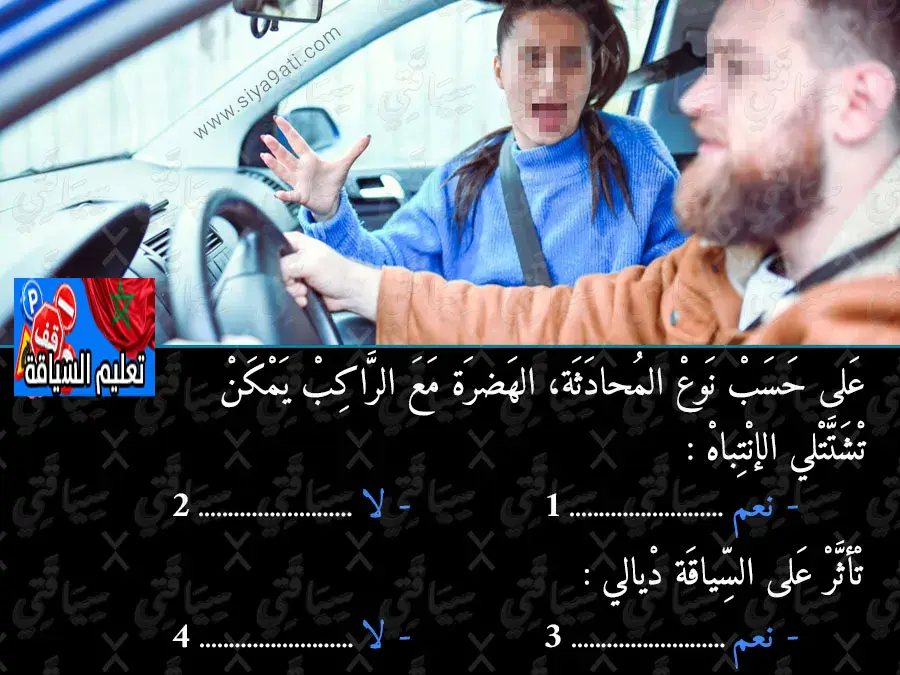
بيّن الجواب
الجواب الصحيح: 1 و 3
الهضرة مع الراكب ممكن تشتّت الانتباه ديالك، خصوصًا إذا كانت المحادثة فيها تركيز أو نقاش (مثلاً نقاش حاد، موضوع فيه توتر، أو فيه ضحك مفرط...). منين كتشتّت، كيتأثر التركيز ديالك على الطريق، وكتنقص قدرتك على اتخاذ القرار بسرعة، وهادشي كيأثر سلبًا على السياقة ديالك ويزيد من احتمال الوقوع في حادث. 📌 لذلك، خاصك تكون مركز، والهضرة تكون خفيفة وماتشتّتكش. الجواب الصحيح هو رقم 1 و 3.
السؤال 7
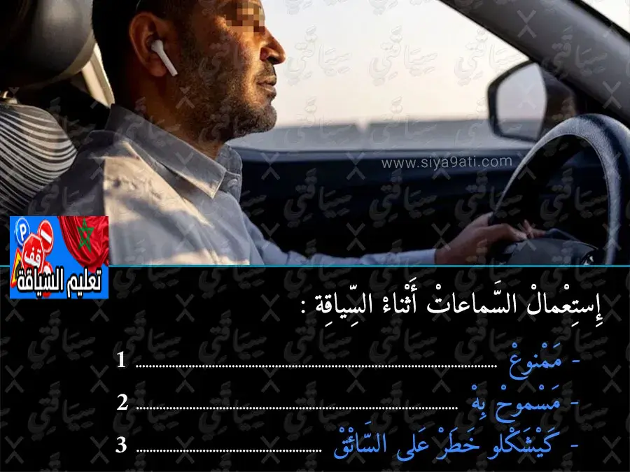
بيّن الجواب
الجواب الصحيح: 2 و 3
استعمال السماعات أثناء السياقة ماشي ممنوع قانونيًا بشكل صريح فمدونة السير المغربية، ولكن كيشكل خطر على السائق. استعمال السماعات (سلكية أو بلوتوث) مسموح به، حيث ما كاين حتى مادة فمدونة السير كتمنعو بشكل مباشر. لكن هاد الاستعمال كيشغل السائق وينقص من التركيز والانتباه، وهادشي يقدر يسبب فحادث. 🚫 يعني: ماشي مخالفة قانونية، ولكن خطر حقيقي على السلامة ديالك وسلامة الآخرين. الجواب الصحيح هو رقم 2 و 3.
السؤال 8
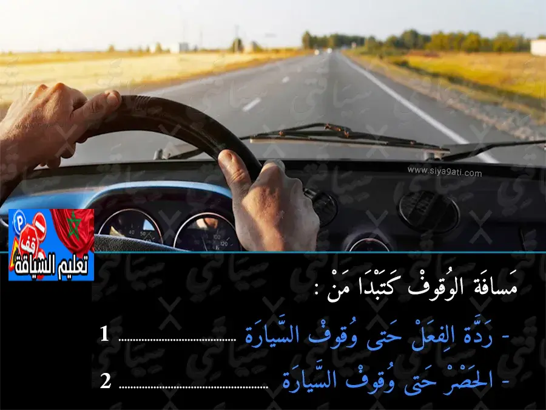
بيّن الجواب
الجواب الصحيح: 1
مسافة الوقوف هي المسافة اللي كتقطعها السيارة من اللحظة اللي كتلاحظ فيها الخطر حتى كتوقف تماماً. يعني كتبدأ بـ: مدة ردة الفعل (الوقت اللي كتحتاجه باش تدير رجلك على الفرامل) وكتكمّل بـ مسافة الفرملة (المسافة اللي كتقطعها السيارة وهي كتفرمل حتى كتوقف) ⛔ إذا قلت بأن مسافة الوقوف كتبدأ غير من الفرملة، راك غلط، لأن ردة الفعل كتدخل فيها حتى هي، وكتكون تقريبا 1 ثانية، والسيارة كتكون ما زال كتمشي فيها بسرعة. ✅ الخلاصة: مسافة الوقوف = ردة الفعل + الفرملة 📌 وبالتالي، كتبدأ من اللحظة اللي كتشوف فيها الخطر، ماشي من الضغط على الفرامل فقط. الجواب الصحيح هو رقم 1.
السؤال 9
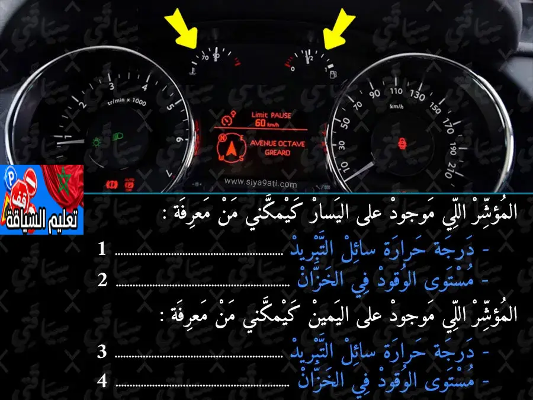
بيّن الجواب
الجواب الصحيح: 1 و 4
المؤشر اللي على اليسار: ➤ كيعطينا درجة حرارة سائل التبريد (اللي كيبرد المحرك) المؤشر اللي على اليمين: ➤ كيعطينا مستوى الوقود فـ الخزان (يعني شحال بقى فالمازوط أو البنزين). الجواب الصحيح هو رقم 1 و 4.
السؤال 10
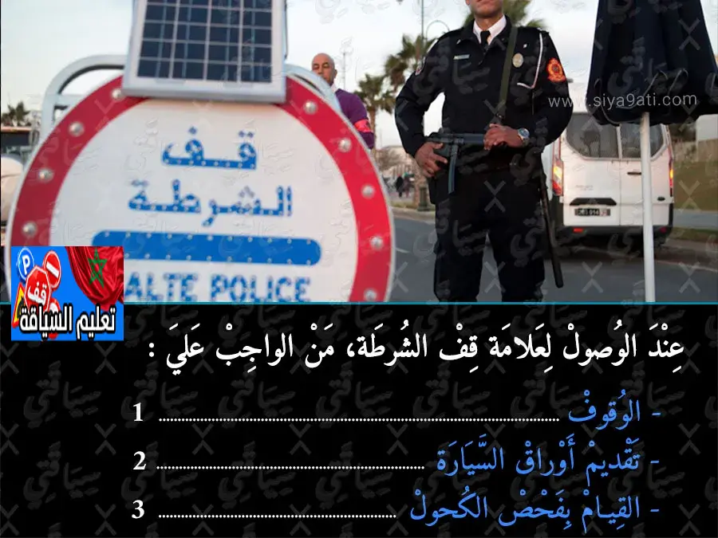
بيّن الجواب
الجواب الصحيح: 1
منين نشوف علامة قف ديال الشرطة، خاصني نوقف إجباريًا، سواء كان كاين شرطي أو لا، لأن العلامة بحد ذاتها أمر قانوني بالوقوف. ❌ ماشي ضروري ندير فحص الكحول من راسي ❌ وماشي ضروري نخرج الأوراق حتى يطلبوها مني 📌 الوقوف هو الإجراء القانوني الوحيد المرتبط مباشرةً بالعلامة. أما باقي الإجراءات (فحص الكحول، تقديم الأوراق...) كتجي إذا طلبها مني الشرطي. الجواب الصحيح هو رقم 1.
السؤال 11
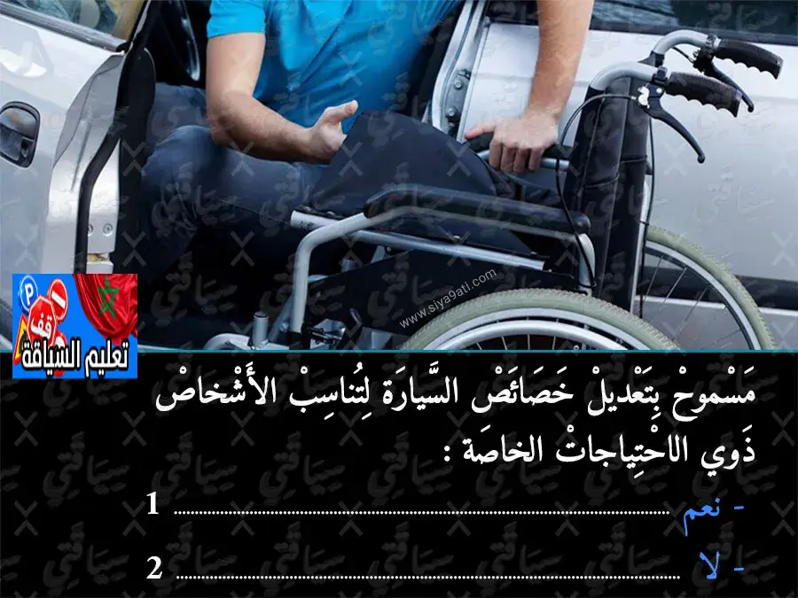
بيّن الجواب
الجواب الصحيح: 1
في المغرب، يُسمح قانونيًا للأشخاص في وضعية إعاقة بتعديل سياراتهم لتناسب احتياجاتهم الخاصة، ولا تُعتبر هذه التعديلات مخالفة. بل بالعكس، هناك تسهيلات قانونية قوية تخول لهم استيراد سيارات مخصصة، أو تعديل سياراتهم الخاصة بأقل رسوم جمركية ممكنة. المادة المساعدة (المكررة) من قانون المالية لسنة 2008 تنص على تخفيض الرسوم الجمركية حتى 2.5%، لكي تشجع الأشخاص ذوي الاحتياجات الخاصة على اقتناء سيارات قابلة للتعدي. كذلك، توجد نماذج لتجهيزات مثل نظام رفع الكرسي، تحكم يدوي، وغيرها، وهذا دعم قانوني لمزاولة السياقة بكرامة واستقلالية. هل مسموح تعديل خصائص السيارة للأشخاص في وضعية إعاقة؟ ✅ نعم، من حيث القانون المغربي. هل يوجد دعم رسمي لتعديلات وأدوات مساعدة؟ ✅ نعم، عبر تخفيضات جمركية واضحة وتمكين اقتناء سيارات مُهيَّأة. الجواب الصحيح هو رقم 1.
السؤال 12
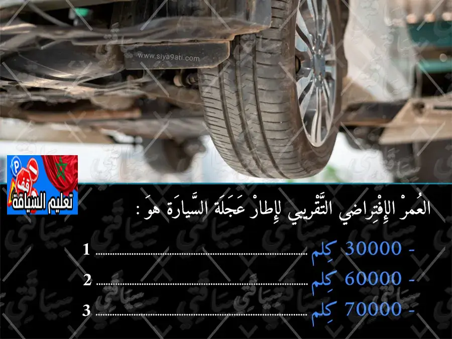
بيّن الجواب
الجواب الصحيح: 1
في أغلب الحالات، يُوصى بتغيير إطارات السيارة بعد أن تقطع ما بين 50,000 إلى 60,000 كيلومتر، وهذا هو المعدل التقريبي الذي تعتمده معظم الشركات. لكن حسب المعلومات المعتمدة من منصة NARSA، يُقدّر العمر الافتراضي التقريبي لإطار السيارة بـ 30,000 كيلومتر. بعد هذه المسافة، يُنصح بمراقبة حالة الإطارات وتغييرها إذا ظهرت عليها علامات التآكل، لأن الإطار المتآكل يمكن أن يُسبب فقدان التماسك وأيضا الإنزلاق على الطّرقات المبللة، ويزيد من احتمال وقوع الحوادث. الجواب الصحيح هو رقم 1. ✅
السؤال 13
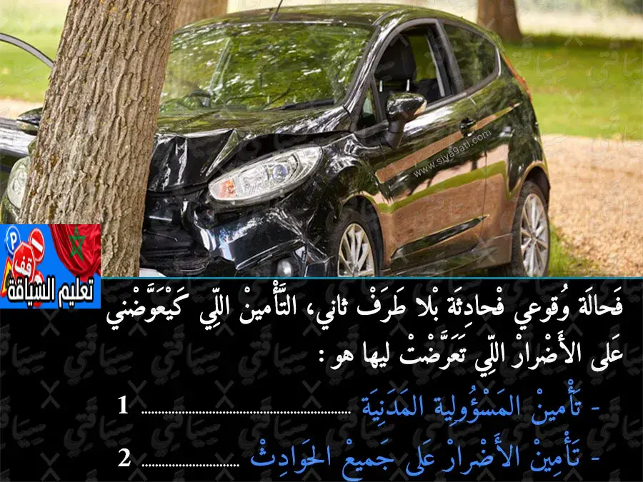
بيّن الجواب
الجواب الصحيح: 2
إلا وقعت فحادثة وحدك (يعني ما كاين حتى طرف ثاني)، تأمين المسؤولية المدنية ما كيعاوضكش، حيت هو خاص بتعويض الطرف الآخر فقط، فاش تكون أنت المسؤول. باش تتعوض على الأضرار اللي وقعات لسيارتك في حادثة بلا طرف ثاني، خاص يكون عندك: 👉 تأمين شامل أو تأمين الأضرار على جميع الحوادث (Assurance tous risques) هاد النوع من التأمين كيغطي حتى الأخطاء ديالك، والعوامل الطبيعية (بحال الرياح، المطر، أو الاصطدام بعمود...). الجواب الصحيح هو رقم 2.
السؤال 14
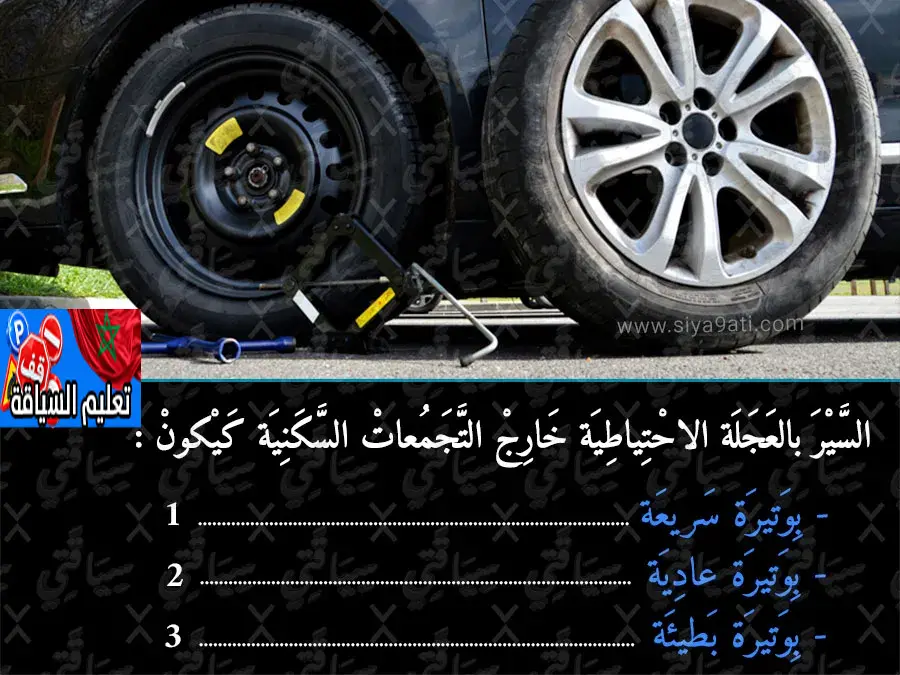
بيّن الجواب
الجواب الصحيح: 3
فاش كتركب العجلة الاحتياطية (la roue de secours)، خصوصاً اللي كاتسمى (galette) (عجلة صغيرة ومؤقتة)، خاصك تسوق ببطء وما تفوتش 80 كم/س (وغالباً كيكون مكتوب عليها هاد الحد). ⛔ هاد العجلة ماشي مصممة باش تسافر بها مسافات طويلة أو بسرعة كبيرة، بل فقط توصل بها لأقرب مركز تصليح. ✅ السير بسرعة عادية أو سريعة فيها خطر كبير: نقص فالتحكم مسافة فرملة أطول تآكل العجلة بسرعة. الجواب الصحيح هو رقم 3.
السؤال 15
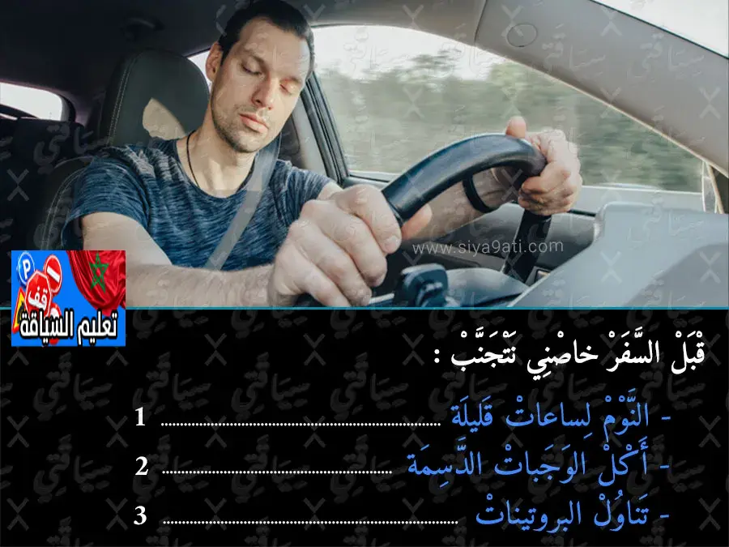
بيّن الجواب
الجواب الصحيح: 1 و 2
قبل ما تسافر، خاصك تهيّأ مزيان بدنيًا وذهنيًا باش تكون السياقة آمنة. ✅ النوم لساعات قليلة كيأثر على التركيز، وكيرفع احتمال النعاس فوسط الطريق، وهادي من بين الأسباب الرئيسية فحوادث السير الخطيرة. ✅ أما الوجبات الدسمة (اللي فيها دهن بزاف)، فهي كتسبب النعاس والثقل، وكتخلي الجسم ما يقدرش يركز مزيان. ❌ أما تناول البروتينات (بحال البيض أو الدجاج)، فهو عادي ومفيد، وما كيأثرش سلبيًا على السياقة، بالعكس كيعطي طاقة خفيفة. 📌 الخلاصة: قبل السفر، خاصك تكون ناعس مزيان، ومتاكلش وجبة ثقيلة باش تبقى مركز وآمن فالسياقة. الجواب الصحيح هو رقم 1 و 2.
السؤال 16
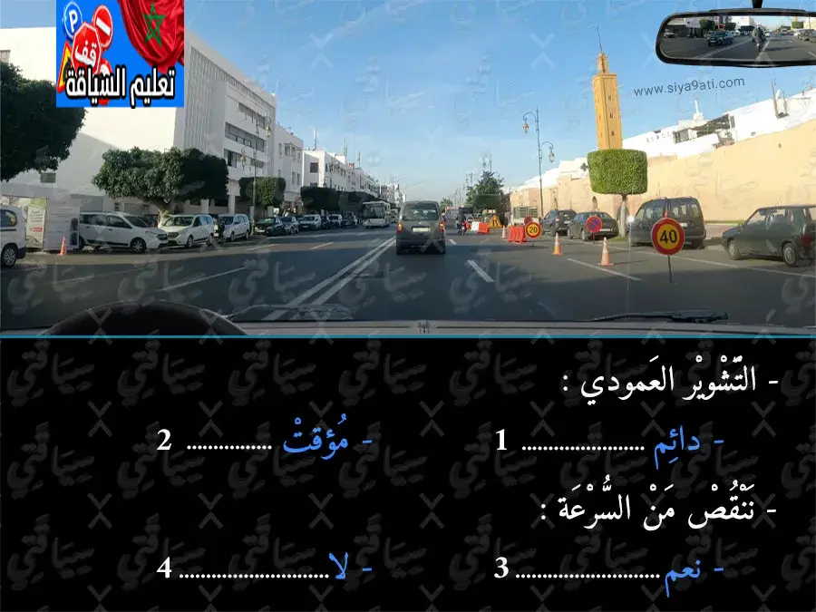
بيّن الجواب
الجواب الصحيح: 2 و 3
هاد النوع من التشوير العمودي اللي باللون الأصفر كيشير غالباً إلى وجود أشغال على الطريق. خاصنا نميّزو بين: التشوير العمودي: هو العلامات اللي كتشوفها واقفة على جنب الطريق (بحال علامة السرعة، علامة المنع، أولوية...). التشوير الأفقي: هو اللي كيتوجد مرسوم على الأرض (بحال الخطوط، الأسهم، الممرات...). فهاد الصورة، كاين تشوير عمودي أصفر ومؤقت، كيكون غالباً بسبب الأشغال. وفي هاد الحالة، ضروري ننقص السرعة ونكون منتبه، حيث المسار ممكن يكون ضيق، أو فيه عمال، أو تغيير فالاتجاه. الجواب الصحيح هو رقم 2 و 3.
السؤال 17
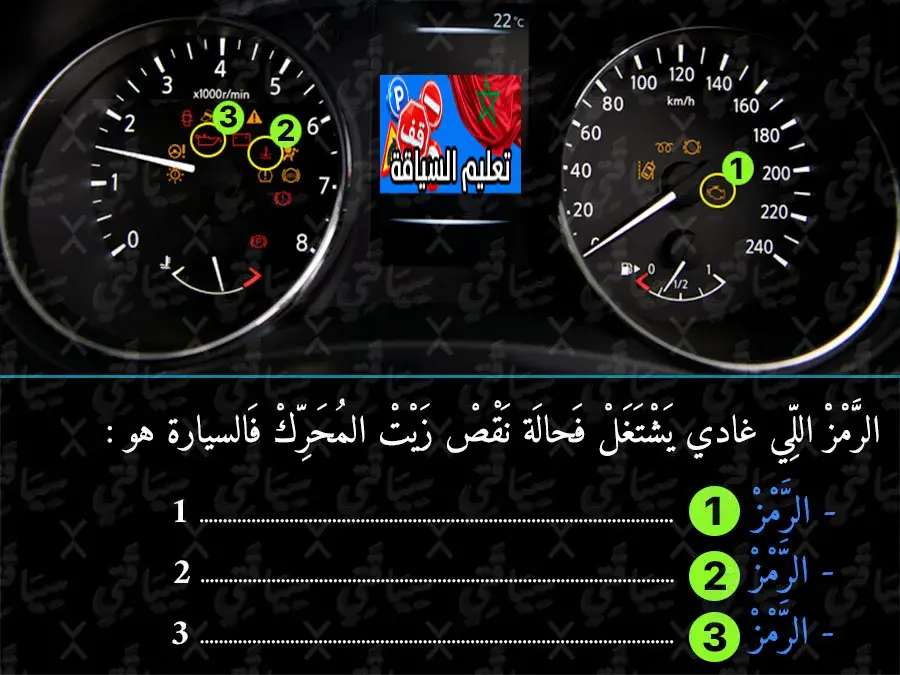
بيّن الجواب
الجواب الصحيح: 3
المز الخاص بنقص زيت المحرك في السيارة والذي سوف يشتغل في حالة نقص الزيت في المحرك هو الرمز رقم 3. الجواب الصحيح هو رقم 3.
السؤال 18
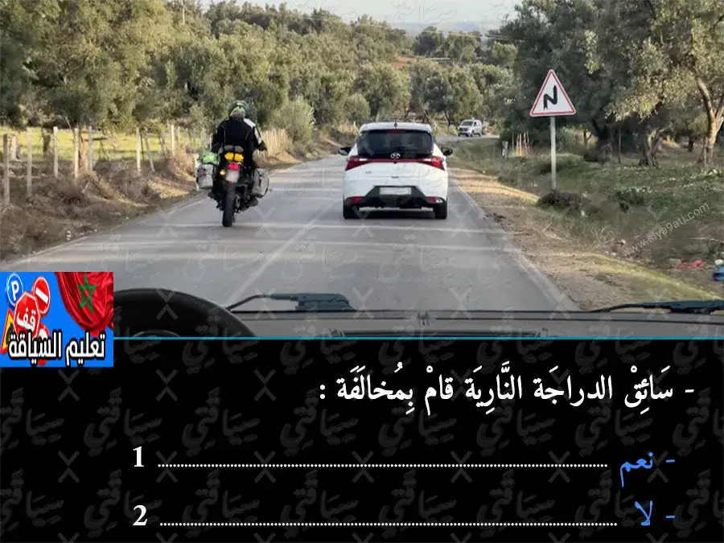
بيّن الجواب
الجواب الصحيح: 1
في هاد الحالة، سائق الدراجة النارية قام بمخالفة، وهادشي راجع لعدة مؤشرات واضحة فالصورة: ✅ كاينة علامة خطر كتنبّه بوجود عدة منعرجات، يعني الطريق ماشي آمنة للتجاوز. ✅ كاين خط متصل على الطريق، واللي كيعني أن التجاوز ممنوع نهائيًا. ✅ كاينة سيارة جاية من الاتجاه المعاكس وسط المنعرج، وهنا كيكون خطر الاصطدام كبير. ⛔ تجاوز فهاد الظروف فيه تهديد مباشر للسلامة، وكيعتابر مخالفة صريحة فمدونة السير المغربية. الجواب الصحيح هو رقم 1.
السؤال 19
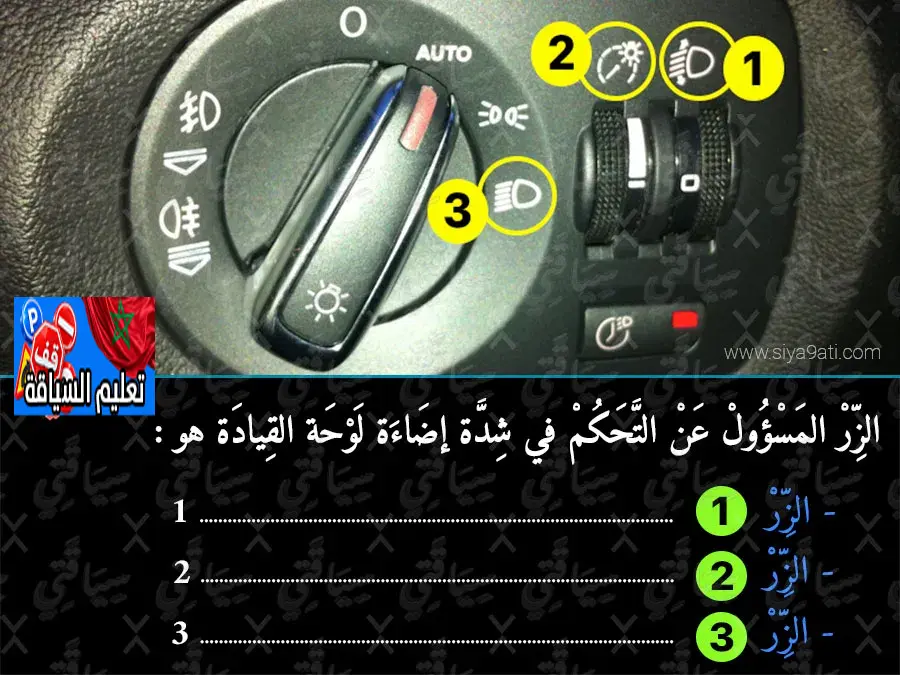
بيّن الجواب
الجواب الصحيح: 2
بالنسبة للزر المسؤول عن التحكم في شدة إضاءة لوحة القيارة هو الزر رقم 2. الجواب الصحيح هو رقم 2.
السؤال 20
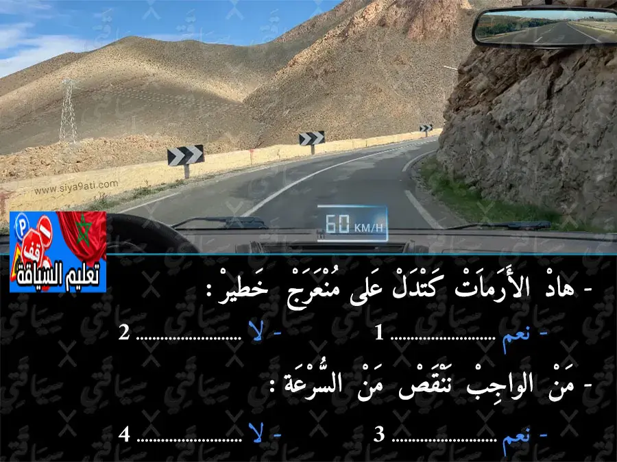
بيّن الجواب
الجواب الصحيح: 1 و 3
الأرمات اللي فالصورة كتشير بوضوح إلى وجود منعرج خطير على اليمين، يعني الطريق ماشي مستقيمة. في هاد الحالات، من الضروري دائمًا نقصّو من السرعة، حتى إلا كنا غاديين بـ60 كلم في الساعة، لأن: المنعرجات كيطلبو تحكم أكثر فالعربة. 👁️ الرؤية فـ المنعرجات ما كتكونش واضحة. ⚠️ الطريق يقدر يكون فيها خطر الانزلاق أو مركبة جاية من الاتجاه المعاكس. ⛔ التجاوز أو السير بسرعة كبيرة فهاد الظروف ممكن يؤدي لفقدان السيطرة. الجواب الصحيح هو رقم 1 و 3.
السؤال 21
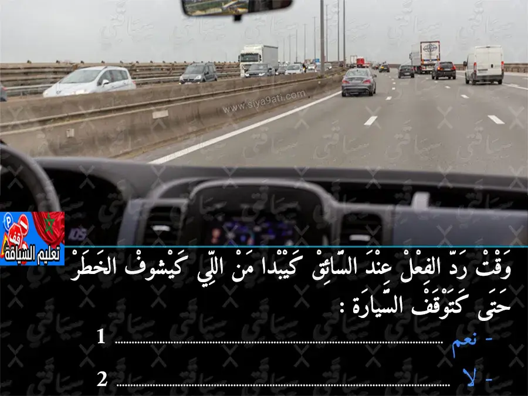
بيّن الجواب
الجواب الصحيح: 2
باش نفهمو مزيان هاد السؤال غادي نشرحوه ليكم مزيان أولا ما هو زمن ردّ الفعل؟ زمن ردّ الفعل هو الوقت اللي كيبدا من اللحظة اللي كيشوف فيها السائق الخطر (مثلاً طفل كيعبر، سيارة حبسات قدّامك...) وحتى يضغط على الفرامل. فهاد الوقت، السائق مازال ما دار حتى فعل تقني (مازال ما ضغطش على الفرامل)، لكن السيارة كتكمل السير بنفس السرعة. 🕒 هاد الزمن كيتراوح غالبًا ما بين ثانية إلى ثانية ونصف، وكيختلف حسب التركيز، التعب، السن، وحتى الحالة الصحية. الان شنو هي مسافة الفرملة أو الوقوف؟ مسافة الفرملة هي المسافة اللي كتقطعها السيارة من بعد الضغط على الفرامل حتى الوقوف الكامل. يعني، حتى إلى ضغط السائق على الفرامل، السيارة ما كتوقفش فورًا، بل كتبقى غاديه شوية حتى كتوقف تدريجيًا. 🚗 إذا جمعنا مسافة رد الفعل + مسافة الفرملة، كنحصلو على: ✅ المسافة الكاملة للوقوف. إذا كنت غادي بسرعة 50 كلم/س، وشفت خطر قدامك: في زمن رد الفعل: السيارة غادي تقطع تقريبًا 15 متر. في مسافة الفرملة: السيارة تقدر تزيد تقطع 10 متر أخرى قبل توقفها. المجموع: تقريبًا 25 متر باش توقف كليًا. زمن ردّ الفعل: من وقت ملاحظة الخطر حتى الضغط على الفرامل. الجواب الصحيح هو رقم 2.
السؤال 22
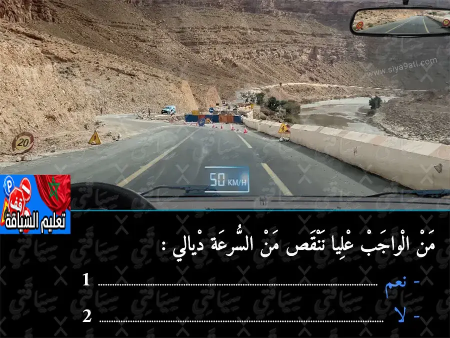
بيّن الجواب
الجواب الصحيح: 1
فهاد الحالة، من الواجب نُنقص من السرعة ديالنا، وهادشي واضح من خلال مجموعة من المؤشرات على الطريق: ✅ وجود علامات عمودية صفراء: هاد العلامات كتعني أن الطريق فيها أشغال مؤقتة، وبالتالي خاصنا نكونو منتبهين بزاف ونقصو من السرعة. ايضا في الأمام كما نلاحظ فإن الطّريق سوف تصبح ضيقة وتنحرف لليسار. هنا كيكون خطر فقدان السيطرة، خصوصاً إذا كانت السرعة مرتفعة. الخلاصة: نعم، من الواجب ننقصو من السرعة باش نواكب الوضعية الطارئة فالطريق، ونفادو أي خطر ممكن يوقع. الجواب الصحيح هو رقم 1.
السؤال 23
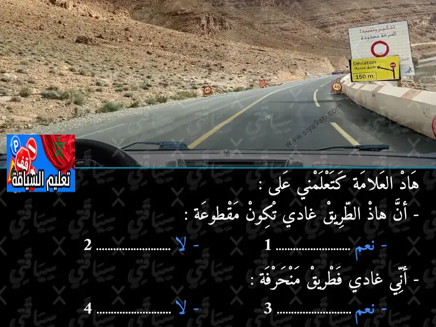
بيّن الجواب
الجواب الصحيح: 2 و 3
العلامة الطّرقية الصفراء وكما هو مكتوب فيها (طريق منحرف) إذن الطّريق سوف تصبح منحرفة وليست مقطوعة. الجواب الصحيح هو رقم 2 و 3.
السؤال 24
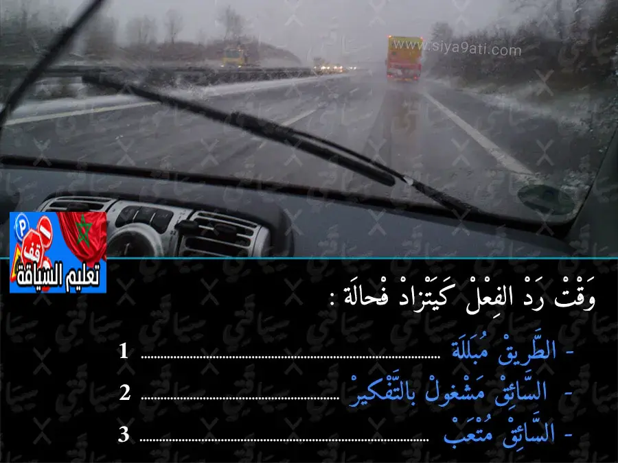
بيّن الجواب
الجواب الصحيح: 2 و 3
وقت رد الفعل كيتزاد إذا كان السائق متعب أو مشغول بالتفكير، يعني إذا ما كانش مركز مزيان على الطريق. أما الطريق المبللة كتخلي السيارة تحتاج مسافة أطول باش توقف، ولكن ما كتأثرش على سرعة رد فعل السائق. الخلاصة: متعب أو مشغول = وقت رد الفعل كيطوال طريق مبللة = مسافة الفرملة كتطوال، ولكن وقت رد الفعل كيبقى هو هو الجواب الصحيح هو رقم 2 و 3.
السؤال 25
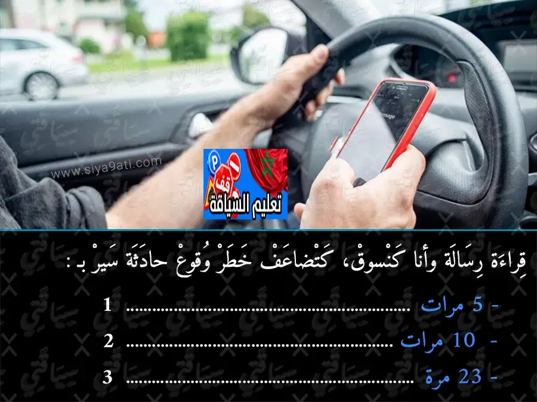
بيّن الجواب
الجواب الصحيح: 3
فاش كتكون كسايق وكتقرا رسالة فالهاتف، تركيزك على الطريق كينقص بزاف، وكيتشتت الذهن ديالك بين السياقة والشاشة. دراسات دولية، أكدت أن: خطر الوقوع في حادثة سير كيتزاد حتى 23 مرة أثناء قراءة أو إرسال رسالة نصية وأنت تسوق السيارة، مقارنة بسائق مركز فقط على الطريق . كتشوف أقل الطريق: عينيك كتكون على الهاتف عوض الطريق. كتبطأ وقت رد الفعل: دماغك مشغول بالكتابة أو القراءة، ما كيبقاش مركز اش واقع فالطريق أو العلامات اللي قدامك. كتخرج على المسار: الإحصائيات بينات أن أغلب السائقين لي كيستعملو الهاتف كينحرفو عن المسار أو كيدوزو خطوط الطريق بلا ما يحسو. الجواب الصحيح هو رقم 3.
السؤال 26
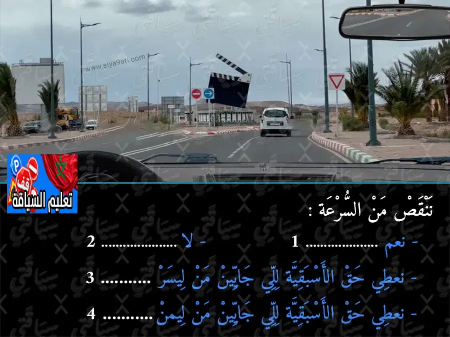
بيّن الجواب
الجواب الصحيح: 1 و 3 و 4
عندما نشوف علامة مثلث مقلوب قبل ملتقى الطرق، فهذا معناه ماعندناش حق الأسبقية في الملتقى اللي جاي. يعني، من الواجب علينا: نقصو من السرعة قبل ما نوصل للملتقى. نعطي حق الأسبقية لكل العربات اللي جاية من اليمين وكذلك من اليسار، حتى إلا كان الطريق باين خاوي. نوقف إذا اقتضى الحال، وما نتقدم حتى نتأكد أن الطريق خاوية وآمنة. 📌 الخلاصة: علامة المثلث المقلوب تعني (إنتبه، يجب أن تعطي حق الأسبقية لجميع العربات في الملتقى القادم)، وهادشي كيطلب منك دايمًا الانقاص من السرعة والانتباه للطريق من الجهتين. الجواب الصحيح هو رقم 134.
السؤال 27
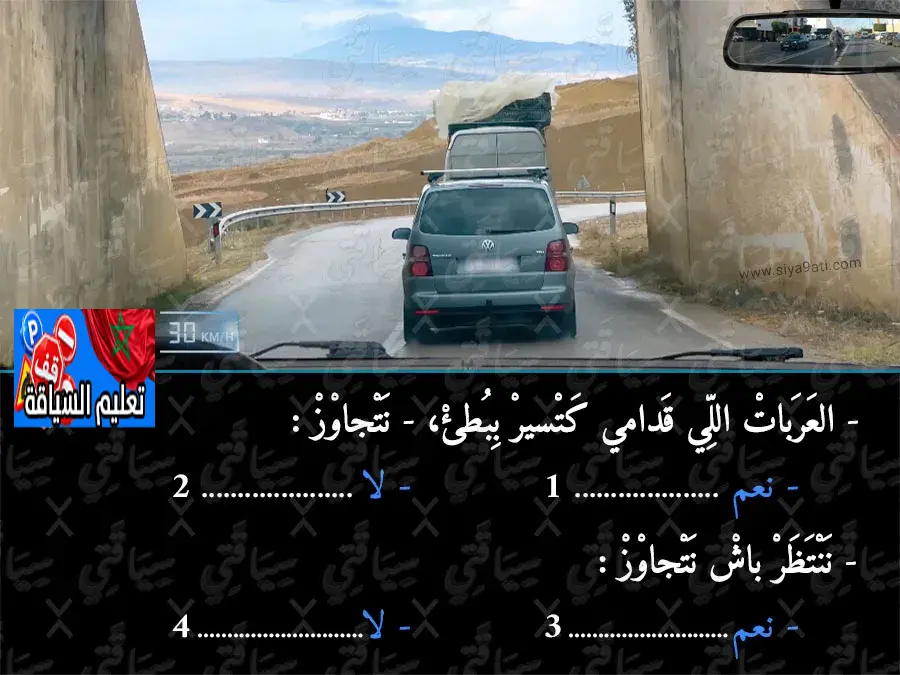
بيّن الجواب
الجواب الصحيح: 2 و 3
حتى إذا كانت العربات اللي قدامي كتسير ببطء، وكنت أنا غادي بسرعة 30 كلم في الساعة، ما يمكنش لي نتجاوز في هاد الحالة لسبب مهم: الرؤية في الأمام غير واضحة لأننا داخل منعرج. ⚠️ في المنعرجات، الرؤية كتكون محدودة، وممكن يكون شي عربة جاية من الاتجاه المعاكس وما نشوفهاش حتى تولّي قريبة بزاف. التجاوز في هاد الحالة خطير بزاف وممنوع حسب قانون السير، حتى ولو كنت غادي ببطء. 📌 الخلاصة: في المنعرج، ممنوع التجاوز حتى تكون الرؤية واضح ومسموح لك قانونيًا. خاصك تصبر حتى تكون الظروف آمنة، عاد دير التجاوز. الجواب الصحيح هو 2 و 3.
السؤال 28
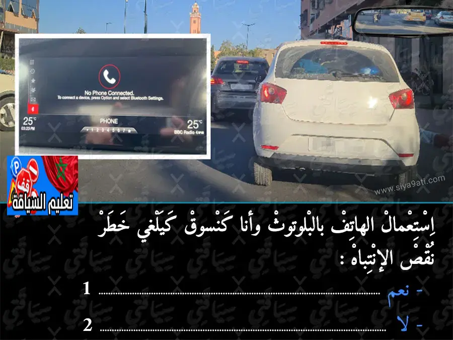
بيّن الجواب
الجواب الصحيح: 2
حتى مع البلوتوث، السائق كيبقى مشغول بالتفكير والكلام، وهادشي كيقلل من التركيز والانتباه للطريق. لأن المشكلة ماشي غير في شَدّ التليفون بيدك، ولكن حتى فـ تشتيت الانتباه والعقل. وقت كتكون مركز في الهضرة مع شي واحد فالهاتف، دماغك ماكيبقاش مركز مزيان فالطريق وحركة السير، وهادي كاتقلل من سرعة ردة الفعل ديالك، ويمكن تخليك متشوفش الخطر بسرعة. 🔴 يعني حتى مع البلوتوث، السياقة بلا تركيز كتكون خطيرة ويمكن تسبب الحوادث. لهذا من الأفضل تبقى مركز فقط في السياقة، وأي مكالمة مهمة توقف على جنب وتجاوب فاش تسمح لك الظروف بذلك. الجواب الصحيح هو رقم 2.
السؤال 29
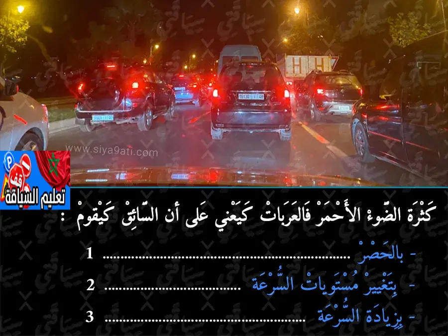
بيّن الجواب
الجواب الصحيح: 1
فهاد الحالة كايبان أن الطّريق عامرة، منين كتشوف بزاف ديال الأضواء الحمراء شاعلين فالعربات اللي قدامك (يعني ضوء الفراميل)، هادشي كيعني أن السائقين اللي قدامك كايستعملو لفران اي الحصر (المكابح). هاد الأضواء الحمراء هي إشارة بأن العربات كتوقف أو كتغير السرعة نحو الانخفاض، وغالبا كاتكون كتعني أنهم كايقومو بـ (الحصر) أو الفرملة. ⛔ ما كاتعنيش أنهم كايزيدو فالسرعة! او كايغيرو من مستوات السرعة الجواب الصحيح هو رقم 1.
السؤال 30
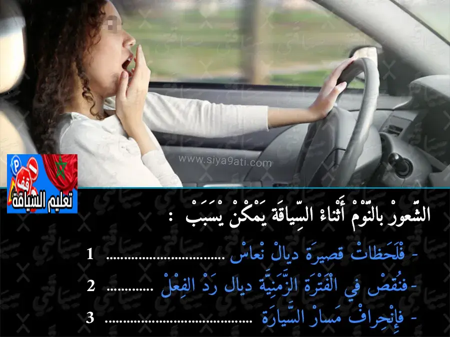
بيّن الجواب
الجواب الصحيح: 1 و 3
منين كيبدا السائق يحس بالنعاس وهو كيسوق، هادشي خطير بزاف، حيث كيقدر يؤدي لمشاكل كثيرة فالسياقة: لحظات قصيرة ديال النعاس: السائق ممكن يغفل عليه النعاس ثواني قليلة بلا ما يحس، وهاد الثواني كافية توقع فيها كارثة. نقص في فترة رد الفعل: بالعكس فاش السائق كايكون عيان فإن زمن رد الفعل سوف يصبح أطول وليس أقر، يعني غادي يتزاد وماغاديش ينقص، باش غادي يتاخد القرار غادي يحتاج وقت اكثر لإتخاد القرار. انحراف مسار السيارة: بسبب النعاس، السائق كيقدر يحيد من المسار ديالو بلا ما يحس، ويقدر يخرج من الطريق أو يصطدم بشي سيارة أخرى. 📌 الخلاصة: الشعور بالنعاس أثناء السياقة خطر كبير، حيث كيقدر يسبب لحظات نعاس قصيرة، يبطئ ردة الفعل، ويجعل السيارة تنحرف عن مسارها، وهكذا يزيد من احتمال وقوع حادثة خطيرة. الحل: منين تحس براسك عيّان ولا نعسان، خاص توقف وترتاح! الجواب الصحيح هو رقم 1 و 3.
السؤال 31
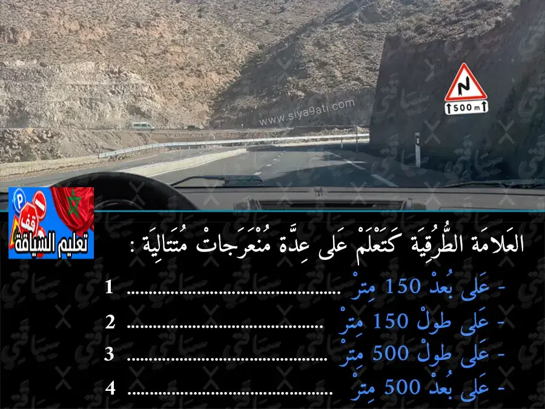
بيّن الجواب
الجواب الصحيح: 1 و 3
في هاد الحالة، عندنا علامة الخطر اللي كتعلن على وجود عدة منعرجات متتالية، وتحتها كاينة علامة تكميلية فيها (500 متر) ومعها جوج ديال الأسهم طالعين لفوق. منين كتشوف الأسهم مع الرقم (500 متر): هنا المقصود هو طول المسافة اللي فيها الخطر، يعني هاد المنعرجات المتتالية غادي تستمر على طول 500 متر. إلى كانت العلامة التكميلية فقط فيها الرقم (500 متر) بلا أسهم: هنا معناها أن الخطر (المنعرجات) غادي يبان بعد 500 متر من البلاصة اللي انت فيها. 📌 بما أننا خارج المجال الحضري، فالخطر الحقيقي غادي يبدا تقريبًا بعد 150 متر من العلامة، لكن المنعرجات المتتالية غادي تبقى مستمرة على طول 500 متر. إذن، الجواب الصحيح هو رقم 1 و3.
السؤال 32
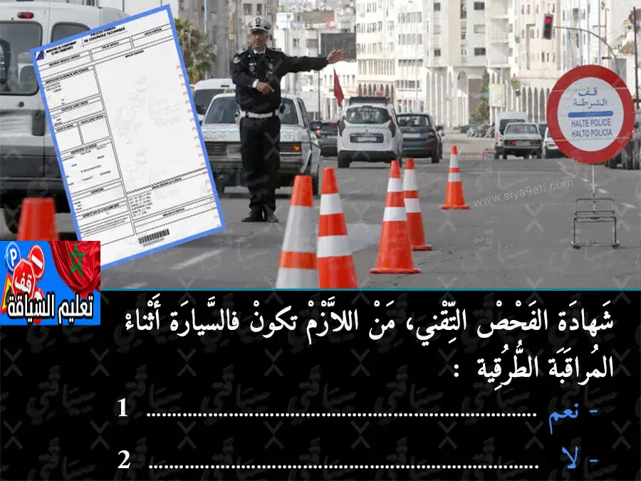
بيّن الجواب
الجواب الصحيح: 1
شهادة الفحص التقني ضروري تكون مع السيارة دائما، خصوصا أثناء المراقبة الطرقية. إذا وقفك شرطي أو مراقب في الطريق، غادي يطلب منك أوراق السيارة، ومن بينها شهادة الفحص التقني. إذا ما كانتش عندك معاك، غادي تعتبر مخالفة، وحتى السيارة ممكن تمنع من السير حتى تجيب الوثيقة. الجواب الصحيح هو رقم 1.
السؤال 33
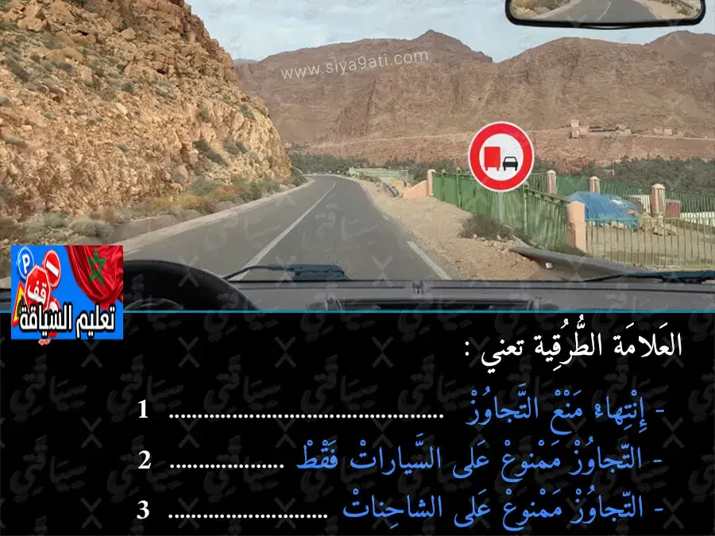
بيّن الجواب
الجواب الصحيح: 3
العلامة اللي كتشوفو في الصورة هي علامة منع التجاوز على الشاحنات فقط. هاد العلامة دائرية وباللون الأحمر، وفيها صورة ديال شاحنة وسيارة. هذا كيعني أن الشاحنات فقط ممنوع عليهم يتجاوزو فهاد الطريق. أما السيارات السياحية والعادية، ماشي معنيين بهاد المنع، ويقدرو يتجاوزو إذا كان الطريق مسموح وباحترام شروط السلامة. الجواب الصحيح هو: 3 - التجاوز ممنوع على الشاحنات.
السؤال 34
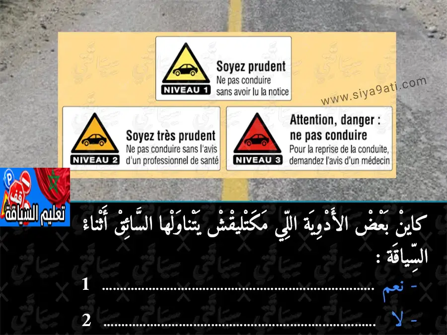
بيّن الجواب
الجواب الصحيح: 1
بعض الأدوية فيها رموز أو علامات تحذيرية كيبينو أن هاد الدوا يمكن يكون خطير أثناء السياقة. كاين أدوية لي مكتوب عليها (ممنوع السياق) أو فيها علامة حمراء (Niveau 3)، وكاين لي كيطلبو منك تسول الطبيب أو تقرا النشرة ديال الدوا قبل ما تسوق (Niveau 1 و2). هاد العلامات كتعني أن الدوا يقدر يديرك نعسان، أو يخليك ما مركزش مزيان، أو يبطئ ردة الفعل ديالك، وهذا خطير بزاف فالسياقة. الجواب الصحيح هو رقم 1 كاين بعض الادوية اللي كاتجيب النعاس وننقص فالتركيز وماكاتجيش مع السياقة.
السؤال 35
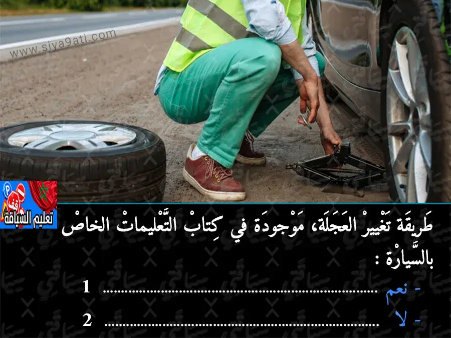
بيّن الجواب
الجواب الصحيح: 1
كل سيارة كتجي معاها كتاب التعليمات (مانيويل ديال السيارة)، وفيه جميع المعلومات المهمة على السيارة ديالك، من بينها طريقة تغيير العجلة (العجلة الاحتياطية). هاد الكتاب كيشرح لك خطوة بخطوة، كيفاش تبدل العجلة، شنو الأدوات اللي خاصك تستعمل، وفين كاينين فالصندوق، وحتى الاحتياطات اللي خاصك تدير باش تبدل العجلة بطريقة آمنة. 📌 إذن، إذا كان عندك شك أو ماعرفتيش تبدل العجلة، الحل هو ترجع لكتاب التعليمات ديال السيارة ديالك، غادي تلقى فيه كلشي موضح. الخلاصة: طريقة تغيير العجلة فعلاً موجودة في كتاب التعليمات الخاص بالسيارة. الجواب الصحيح هو رقم 1.
السؤال 36
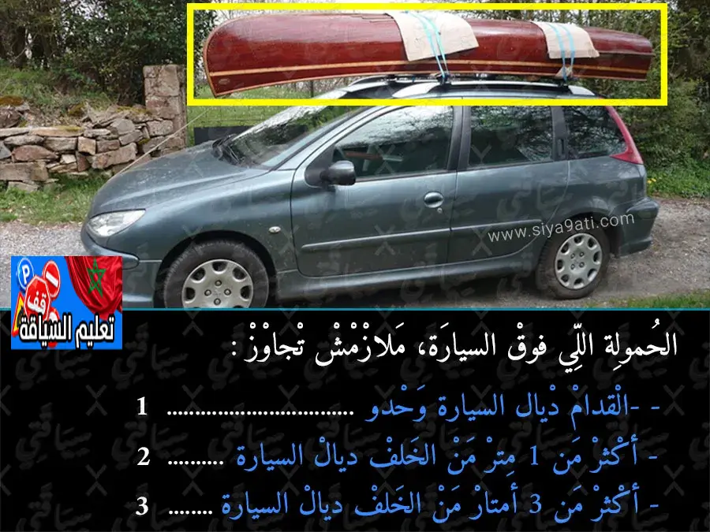
بيّن الجواب
الجواب الصحيح: 1 و 3
مدونة السير المغربية كتنظم حتى الحمولة اللي كنديرو فوق السيارة. خاص الحمولة ما تتعداش القدام ديال السيارة (يعني ما خاصهاش تبرز قدام الطوموبيل نهائياً)، وفي اللور، القانون كيحدد بالضبط شحال يمكن تبرز الحمولة: ما خاصهاش تتعدى 3 أمتار من الخلف ديال السيارة. إذا الحمولة اللي فوق السيارة تجاوزات هاد المسافة، غادي تولي خطر على السلامة ديالك وسلامة مستعملي الطريق الآخرين، وغادي تعرض راسك لمخالفة قانونية. 📌 الخلاصة: القدام: الحمولة تبقى في حدود السيارة اللور: يمكن تبرز حتى 3 أمتار فقط، وما يزيدش عليها. الجواب الصحيح هو رقم 1 و 3.
السؤال 37
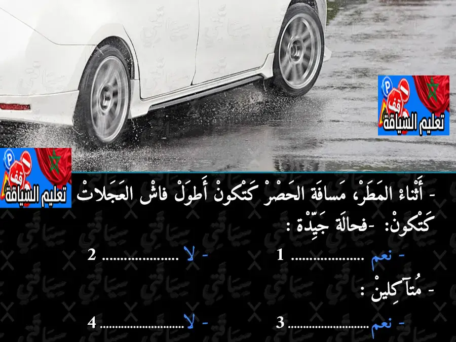
بيّن الجواب
الجواب الصحيح: 2 و 3
فاش كيكون الجو ممطر، مسافة الفرملة (الحصر) ديال السيارة كاتولي أطول، لأن الطريق كتكون زلقة. لكن هاد المسافة كاتولي أخطر وأكثر طولاً إلا كانت العجلات متآكلة (يعني النقوش ديالهم مسحو أو ما بقاش فيهم العمق الكافي). إلى كانت العجلات في حالة جيدة (النقوش باقين واضحين): فرغم المطر، الفرامل غادي توقف السيارة فمسافة معقولة، لكن بطبيعة الحال، كاتبقى أطول من الأرض الجافة. إلى كانت العجلات متآكلة: مسافة الفرملة كاتولي طويلة بزاف وخطيرة، لأن الإطار ما كيبقاش يشد الطريق مزيان، ويقدر يوقع الإنزلاق بسهولة. 📌 الخلاصة: فالمطر، خاص العجلات يكونو فحالة جيدة باش السيارة توقف بشكل جيد، وإلا كانت متآكلة، مسافة الحصر كاتولي خطيرة وطويلة بزاف. ✅ إذن الجواب: نعم، مسافة الحصر كتولي أطول إلا كانت العجلات متآكلة. الجواب الصحيح هو 2 و 3.
السؤال 38
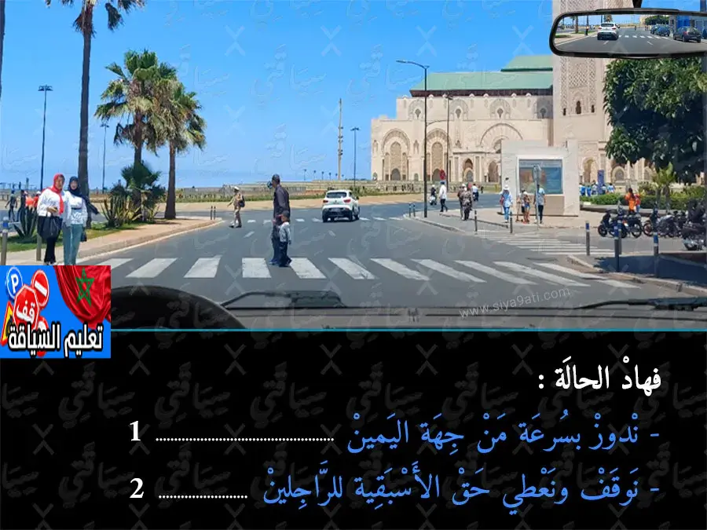
بيّن الجواب
الجواب الصحيح: 2
فهاد الحالة، منين كتوصل قرب ممر الراجلين وكتشوف الناس كايقطعو الطريق، خاصك توقف وتعطيهم حق الأسبقية حتى يكملو المرور بأمان. حتى إذا كان المكان اللي على اليمين خاوي، ممنوع تدوز بسرعة، لأن هاد التصرف فيه خطر كبير على حياة الراجلين وحياتك أنت كذلك. مدونة السير المغربية كتلزم جميع السائقين إعطاء الأسبقية للراجلين فوق ممرهم، وما تسوق حتى يفرغ الطريق قدامك نهائياً. ⛔ السائق اللي ما كيحترمش هاد القاعدة، كيرتكب مخالفة من الدرجة الثانية، وغادي يخلص غرامة مالية قدرها 500 درهم، بدون خصم نقاط من رخصة السياقة. 📌 الخلاصة: ديما وقف وعطي حق الأسبقية للراجلين في الممر الخاص بهم، وإلا تعرضتي لمخالفة وغرامة مالية. الجواب الصحيح هو رقم 2.
السؤال 39
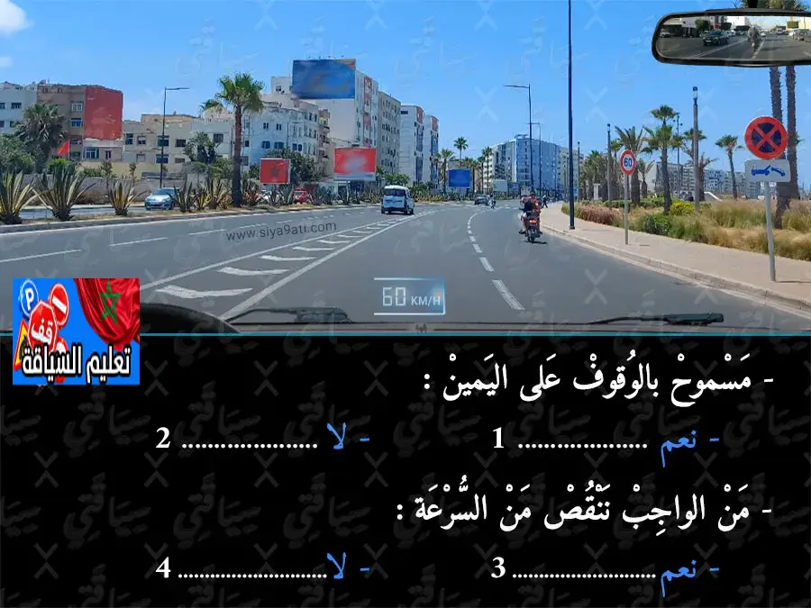
بيّن الجواب
الجواب الصحيح: 2 و 4
في الصورة كاين جوج علامات مهمة: علامة منع الوقوف والتوقف: العلامة الدائرية الزرقاء اللي فيها خطين حمر متقاطعين تعني ممنوع الوقوف والتوقف في هذا الجانب من الطريق. والسهم في اللافتة التكميلية اللي تحتها كيبيّن أن المنع كيمتد على طول الطريق نحو الأمام. إذن، الوقوف على اليمين: لا، ممنوع. ثانيا يوجد علامة تحديد السرعة في 60 كلم في الساعة. حاليًا، أنا كنمشي بسرعة 60 كلم في الساعة، والحد الأقصى للسرعة في الطريق هو 60 كلم في الساعة (حسب العلامة). في هاد الحالة، ماشي من الواجب عليا ننقص من السرعة، حيت أنا أصلاً كنسوق بسرعة وفق القانون المسموح به. القانون كيلزم السائق ما يفوتش السرعة اللي كاتحددها العلامة، لكن ما كيجبركش تنقص أكثر إذا كنت أصلاً تسوق السيارة بنفس السرعة القصوى او أقل. الجواب الصحيح هو رقم 2 و 4.
السؤال 40
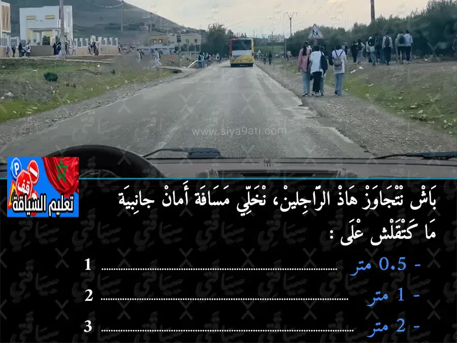
بيّن الجواب
الجواب الصحيح: 2
منين كانبغي نتجاوز الراجلين اللي كيمشيو على جناب الطريق، خاصني نخلي مسافة أمان جانبية بيني وبينهم، باش نحميهم ونحمي راسي من أي خطر. 🔴 القانون المغربي كيلزمنا نخليو على الأقل 1 متر كمسافة أمان جانبية فهاد الحالة. هذا يعني ما خصنيش نقرّب بزاف للراجلين أثناء التجاوز، باش حتى إذا وقع شي حاجة مفاجئة، نكون بعيد عليهم وما نصدمهمش. 📌 الخلاصة: الجواب الصحيح هو 1 متر. دائما خلي المسافة الكافية للسلامة ديالك وديال الآخرين، خاصة الراجلين. الجواب الصحيح هو رقم 2.